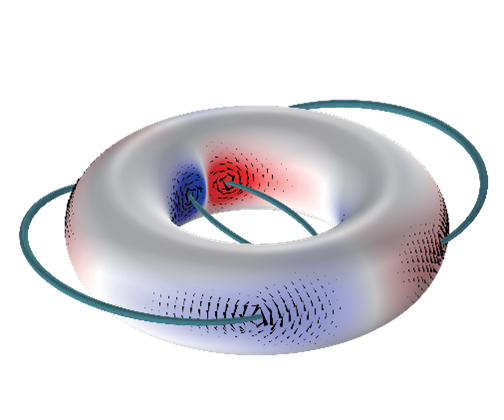
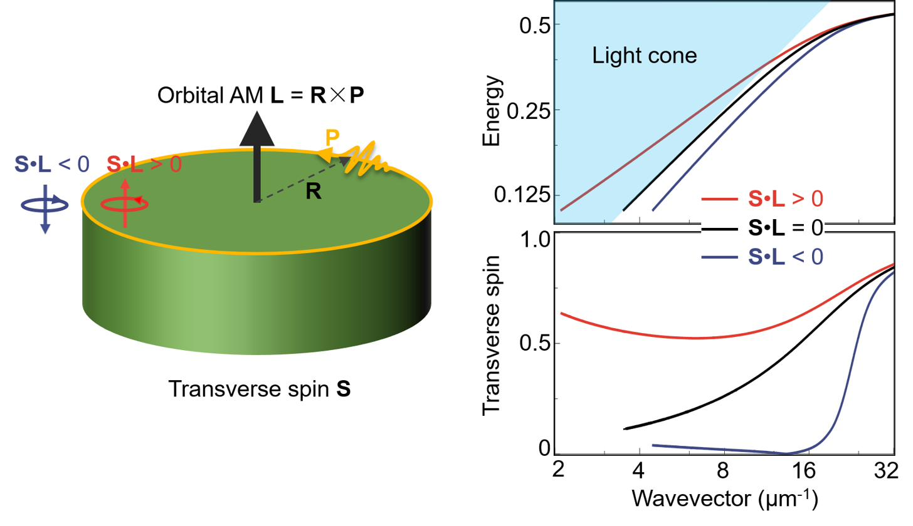
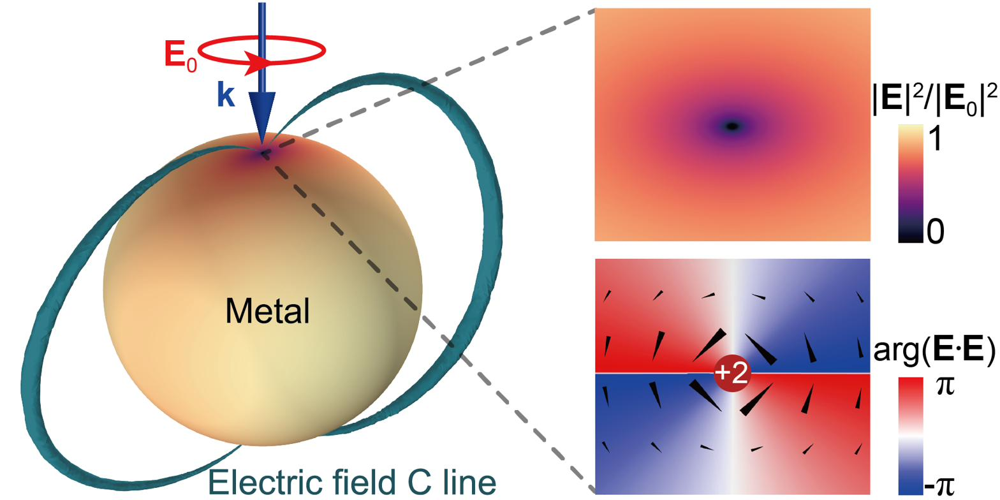

Postdoctoral Researcher · Department of Physics
City University of Hong Kong
h-index: 14 · i10-index: 20 · ORCID: 0000-0001-7669-6903
Extending topological invariants — real-space spin Chern numbers, Euler characteristics, polarization singularities (C-lines) — from momentum-space band theory into electromagnetic near fields of finite nanostructures.

Transverse spin-orbit interactions of light in nanoscale environments: Berry phase of transverse spin in curved paths, analogous to the Dresselhaus effect. Directionality in plasmonic waveguides via spin-momentum locking.

Topological dark spots and C-lines in near fields of metallic nanostructures, chiral near-field enhancement for biosensing, and optical chirality control in graphene-based and plasmonic systems.

I am a Postdoctoral Researcher at the Department of Physics, City University of Hong Kong. My research focuses on the topological and geometric properties of optical near fields, the spin-orbit interactions of light, and chiral light-matter interactions in photonic and plasmonic systems.
My recent work demonstrated that the real-space spin Chern number of optical near fields is intrinsically quantized and equals a structure's Euler characteristic — a robust law independent of material composition or external excitation, connecting topology of light with topology of matter.
Welcome collaborations, research discussions, and talk invitations on topological photonics, spin-orbit interactions, and nanophotonics.
tongfu.physics@gmail.com